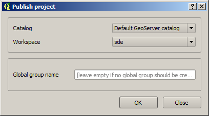
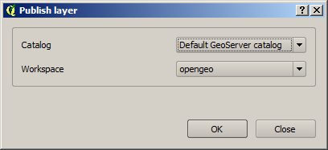
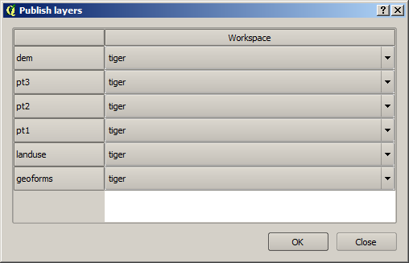
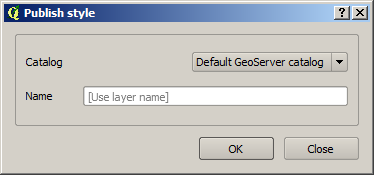

QGIS Project actions¶
The following actions are available for items in the QGIS Project branch.
QGIS Project¶
| Action | Description |
|---|---|
| Refresh | Updates the contents of the entire QGIS Project tree. |
| Publish | Publishes all the layers in the project. The publish operation is configured through the following dialog: All layers will be published to the selected workspace. If there are groups in the QGIS project, they will also be created. Groups are not overwritten when publishing a project. If a group with the same name exists in the catalog, a warning message will be shown and the group will not be uploaded. If you want to create a group containing all the published layers, enter its name in the Global group name textbox. Otherwise, leave it empty and the global group will not be created. |
QGIS Layers¶
| Action | Description |
|---|---|
| Refresh | Updates the contents of the list of QGIS layers in the tree. |
| Publish | Publishes the layer to a GeoServer catalog. It creates a store and resource and a layer based on it. If the layer is a vector layer, the corresponding styling defined in QGIS or that layer will be published and used for the layer. The catalog and workspace are selected in a dialog like the one shown below The plugin code will take care of converting your data to a suitable format to be uploaded to GeoServer. If the current format of the layer is not supported, an intermediate Shapefile or TIFF file will be created. The name of the layer in QGIS will be used as name for the layer. If elements exist with those names, they will be overwritten. If you try the QGIS layer is based on a PostGIS connection, a PostGIS datastore will be created. If a PostGIS datastore with the same name and connection parameters already exist, no new datastore is created, and the featuretype will be directly created under it. In the case of raster layers, since QGIS does not support SLD styling of raster layers, a default style is used. |
| Create store from layer | Similar to Publish, except it does not publish a layer or use the styling. |
| Edit/view layer metadata | Opens the metadata editor/viewer. More information about the metadata interface is provided in the Editing/viewing layer metadata section. |
QGIS Groups¶
| Action | Description |
|---|---|
| Refresh | Updates the contents of the list of QGIS groups in the tree. |
| Publish | Publishes the selected group as a layer group. If layers with the names of the layers in the group already exist in the destination catalog, they will be used and the data from the corresponding QGIS layers will not be used (depending on whether Overwrite layers when uploading group was checked or not in the Configuration. The command will first ask you to select a catalog. Then it will check the layers in the selected catalog, to see if there are missing layers. If so, the layer publish dialog will be shown, containing the layers that have to be published before the group can be created, so you can specify the destination workspace for each of them.  |
QGIS Styles¶
| Action | Description |
|---|---|
| Refresh | Updates the contents of the list of QGIS styles in the tree. |
| Publish | Publishes the selected style. The operation is defined in the dialog shown below. If no name is entered in the textbox, the name of the layer will be used as style name. Otherwise, the specified name will be used. |
Table Of Contents
This Page
About Boundless
Boundless provides commercial open source software for internet mapping and geospatial application development. We are dedicated to the growth and support of open source software.
License
This work is licensed under a Creative Commons Attribution-Share Alike 3.0 United States License. Feel free to use this material, but we ask that you please retain the Boundless branding, logos and style.